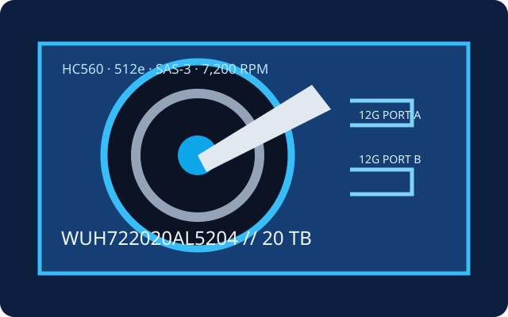

[ IDENTIFIED HDD // MODEL-SPECIFIC RECORD ]
WD Ultrastar DC HC560 WUH722020AL5204
20 TB 7,200-rpm data-center HDD in the 12G SAS configuration. This exact part number differs from HC560 SATA models and other sector variants.

Recorded specifications
| Exact model | WUH722020AL5204 (Ultrastar DC HC560) |
|---|---|
| Capacity | 20 TB |
| Sector format | 512e; verify the actual device's logical/physical sector presentation and firmware |
| Interface / ports | SAS-3, 12 Gbit/s, dual-port |
| Rotational speed | 7,200 rpm |
| Cache | 512 MB |
| Form factor | 3.5-inch, helium-sealed |
| Workload / reliability | Up to 550 TB/year workload and 2.5 million-hour MTBF, as rated for the HC560 family. Both values are population metrics, not per-drive guarantees. |
Host compatibility and qualification
- Connect only to a supported SAS HBA/RAID controller and SAS backplane/expander; SATA-only controllers/backplanes are incompatible. Check SAS 12G link support, 20 TB capacity/LBA limits, 512e handling, enclosure firmware and power/cooling.
- Verify the full part number against controller and server compatibility lists. SAS path redundancy requires compatible dual-port wiring; 3.5-inch physical fit alone is not sufficient.
- The workload and MTBF ratings do not predict individual service life. Verify the exact sector size, monitor health, and protect data with separate tested copies and a recovery plan.
Manufacturer sources
- Western Digital — Ultrastar DC HC560 data sheetManufacturer capacity, reliability and family specifications.
- Western Digital — HC560 SAS product manualManufacturer OEM technical document for the SAS version; confirm the ordered suffix.